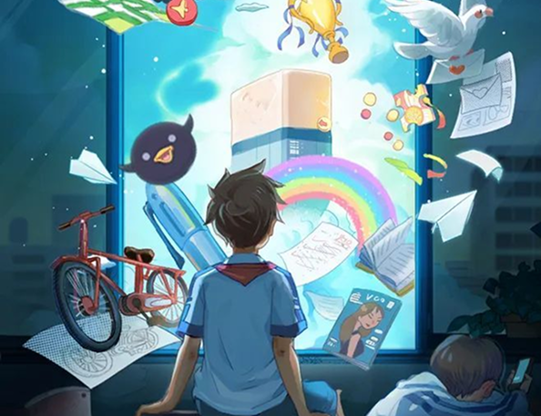
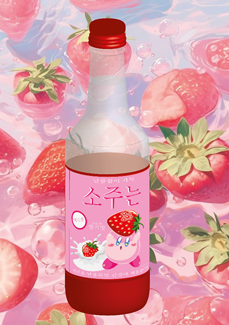
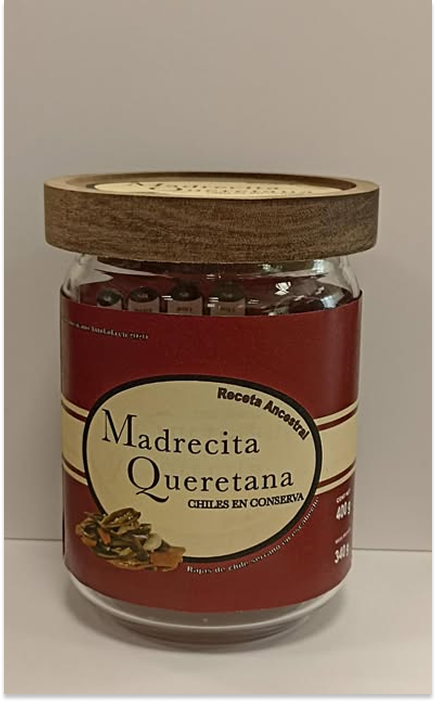
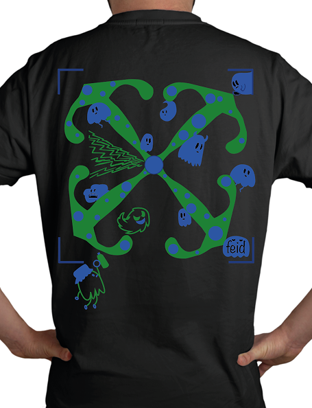
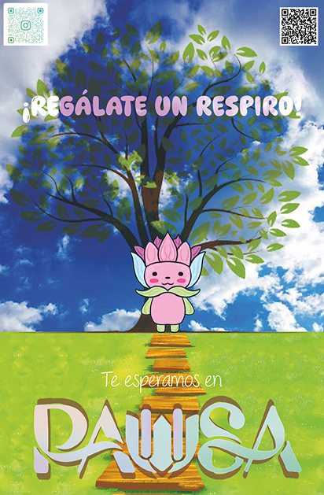

El concept art es la base visual de cada mundo que creamos. Desarrollamos ilustraciones detalladas que definen la atmósfera, el estilo artístico y el diseño de entornos o elementos, transformando ideas abstractas en guías visuales sólidas para la producción de videojuegos y cine.


Concept art de producto aplicado en un soju de fresa con estética kawaii. Define el diseño de etiqueta fusionando marca de consumo, personaje de anime y paleta vibrante.

Concept art de producto aplicado en un frasco de chiles con estética elegante y minimalista. Etiqueta limpia que fusiona identidad de marca con una paleta sobria y refinada, tipografía moderna y composición equilibrada para transmitir calidad y sofisticación.

Concept art de prenda streetwear inspirado en el artista Feid y la estética de Off-White. Diseño gráfico aplicado en la parte posterior de playera, integrando composición radial, personajes ilustrados tipo doodle y paleta verde-azul vibrante para reinterpretar el lenguaje visual urbano y contemporáneo.

Concept art de póster escolar para un espacio de descanso seguro. Integra un entorno natural con un árbol como símbolo de calma y un personaje kawaii que conecta con los estudiantes. Usa una paleta en verdes y azules para transmitir tranquilidad, invitando a disfrutar las horas libres en un ambiente relajado y sin riesgos.